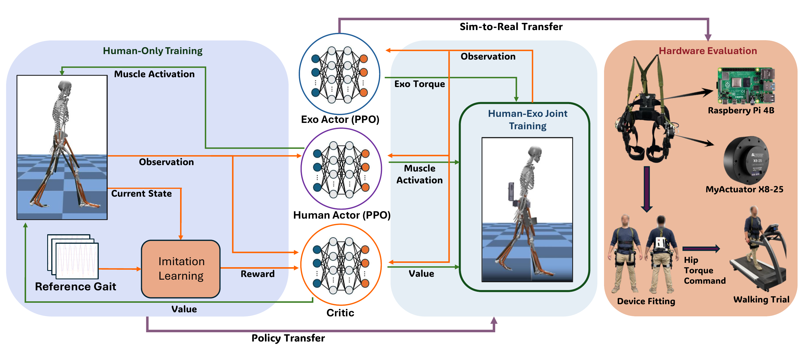
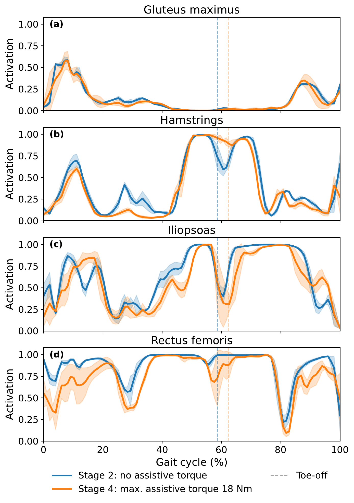
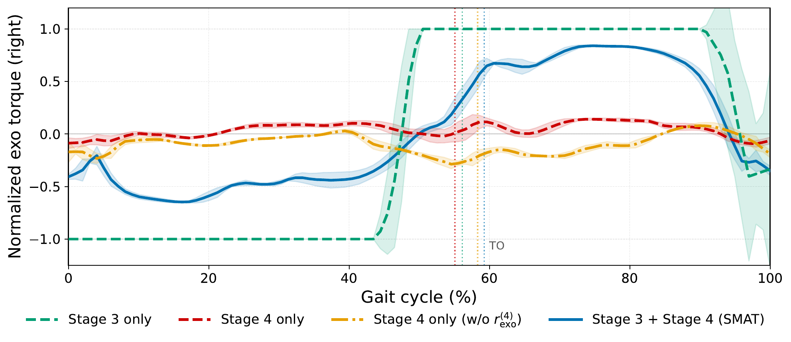
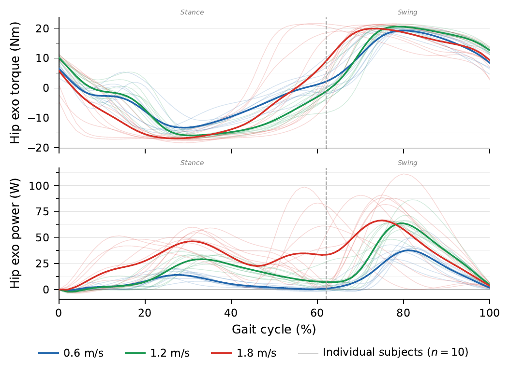
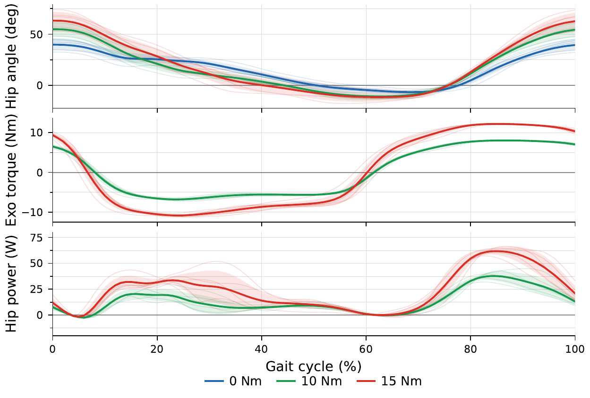

Abstract
Effective exoskeleton assistance requires co-adaptation: as the device alters joint dynamics, the user reorganizes neuromuscular coordination, creating a non-stationary learning problem. Most learning-based approaches do not explicitly account for the sequential nature of human motor adaptation, leading to training instability and poorly timed assistance. We propose Staged Multi-Agent Training (SMAT), a four-stage curriculum designed to mirror how users naturally acclimate to a wearable device. In SMAT, a musculoskeletal human actor and a bilateral hip exoskeleton actor are trained progressively: the human first learns unassisted gait, then adapts to the added device mass; the exoskeleton subsequently learns a positive assistance pattern against a stabilized human policy, and finally both agents co-adapt with full torque capacity and bidirectional feedback. We implement SMAT in the MyoAssist simulation environment using a 26-muscle lower-limb model and an attached hip exoskeleton. Our musculoskeletal simulations demonstrate that the learned exoskeleton control policy produces an average 10.1% reduction in hip muscle activation relative to the no-assist condition. We validated the learned controller in an offline setting using open-source gait data, then deployed it to a physical hip exoskeleton for treadmill experiments with five subjects. The resulting policy delivers consistent assistance and predominantly positive mechanical power without the need for any explicitly imposed timing shift (mean positive power: 13.6 W at 6 Nm RMS torque to 23.8 W at 9.3 Nm RMS torque, with minimal negative power) consistently across all subjects without subject-specific retraining.
Method Overview

Overview of the SMAT framework. Two PPO-based actors — a musculoskeletal human actor πh and an exoskeleton actor πe — interact with a shared physics simulation through a shared critic. Stage 1: human-only baseline gait learning. Stage 2: human adaptation to exoskeleton mass. Stage 3: exoskeleton assistance timing learning with frozen human policy. Stage 4: full human–exoskeleton co-adaptation.
Results

Right-side hip muscle activation over the gait cycle comparing Stage 2 (no assistive torque) and Stage 4 (maximum assistive torque 25 Nm). Shaded bands: mean ± 1 s.d. Dashed vertical lines mark mean toe-off for each condition.

Ablation comparing right-hip normalized exo torque over the gait cycle under four conditions: Stage 3 only without Stage 4 co-adaptation; Stage 4 only initialized from Stage 2 without Stage 3 pre-training; Stage 4 only without the exo reward, initialized from Stage 2; and the full Stage 3 + Stage 4 (SMAT) pipeline. Dotted vertical lines mark mean toe-off.

Speed generalization on the GT dataset (10 subjects, 0.6, 1.2, and 1.8 m/s). Top: Gait-cycle-normalized group mean hip torque; solid: exo torque, dashed: biological hip torque (no-exo, amplitude scaled for timing comparison). Bottom: Hip exo power; thin lines: individual subjects, bold: group mean. Dashed vertical line: toe-off (≈62%).

Hip kinematics, exo torque, and mechanical power under assisted conditions (0 Nm: blue, 10 Nm: green, 15 Nm: red; 0% = peak hip flexion). Top: Group-mean right hip angle. Middle: Exoskeleton torque. Bottom: Right hip assistance power. Shaded bands: ±1 s.d.; thin lines: subject means.
Paper
BibTeX
@misc{yuan2026smatstagedmultiagenttraining,
title={SMAT: Staged Multi-Agent Training for Co-Adaptive Exoskeleton Control},
author={Yifei Yuan and Ghaith Androwis and Xianlian Zhou},
year={2026},
eprint={2603.07618},
archivePrefix={arXiv},
primaryClass={cs.RO},
url={https://arxiv.org/abs/2603.07618}
}